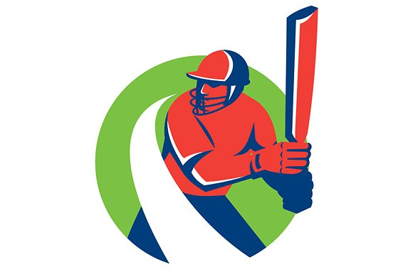
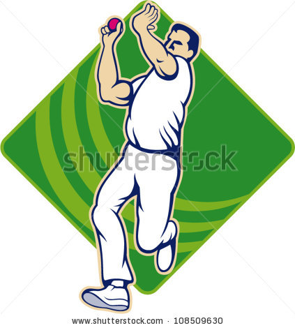

KCC is Cricket Club in Warangal who plays domestic cricket. This team has wonderful players and played across all formats
Batting is the act or skill of hitting the cricket ball with a cricket bat to score runs or prevent the loss of one's wicket. ... When a batsman is out, he is replaced by a teammate.
Bowling, in cricket, is the action of propelling the ball toward the wicket defended by a batsman. A player skilled at bowling is called a bowler; a bowler who is also a competent batsman is known as an all-rounder. ... Bowlers bowl deliveries in sets of six, called an over.
